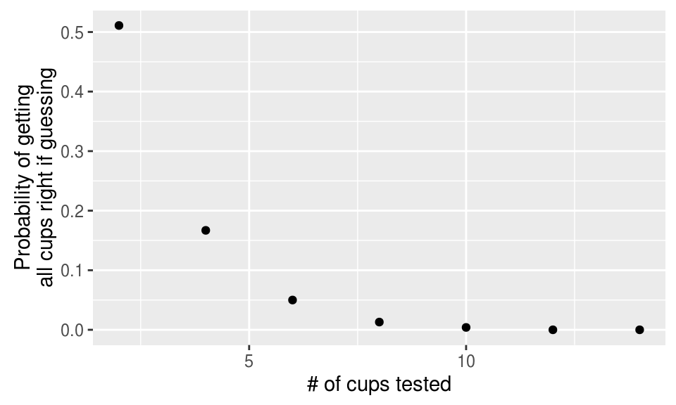
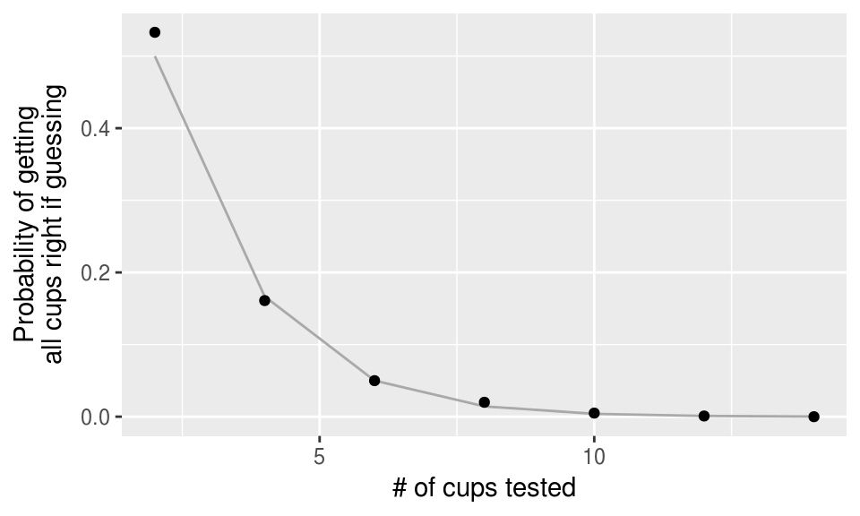
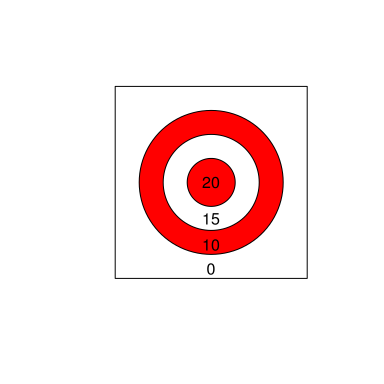
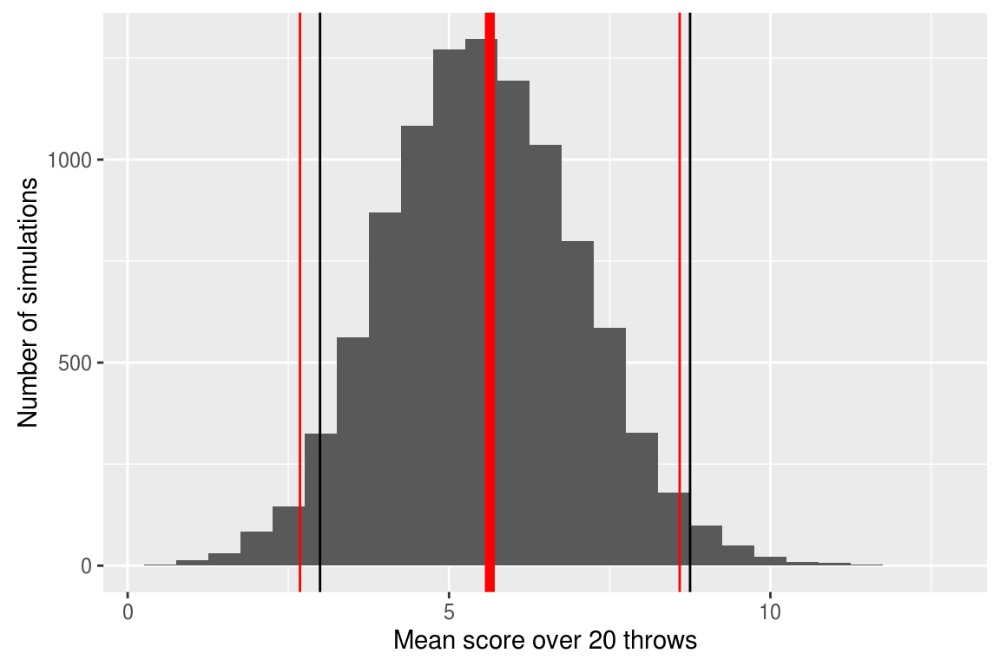

Chapter 11 Exploring data #3
Download a pdf of the lecture slides covering this topic.
11.1 forcats
Hadley Wickham has developed a package called forcats that helps you work with categorical variables (factors). I’ll show some examples of its functions using the worldcup dataset:
library(forcats)
library(faraway)
data(worldcup)The fct_recode function can be used to change the labels of a function (along the lines of using factor with levels and labels to reset factor labels).
One big advantage is that fct_recode lets you change labels for some, but not all, levels. For example, here are the team names:
worldcup %>%
filter(str_detect(Team, "^US")) %>%
slice(1:3) %>% select(Team, Position, Time)## Team Position Time
## 1 USA Midfielder 10
## 2 USA Defender 390
## 3 USA Defender 200If you just want to change “USA” to “United States”, you can run:
worldcup <- worldcup %>%
mutate(Team = fct_recode(Team, `United States` = "USA"))
worldcup %>%
filter(str_detect(Team, "^Un")) %>%
slice(1:3) %>% select(Team, Position, Time)## Team Position Time
## 1 United States Midfielder 10
## 2 United States Defender 390
## 3 United States Defender 200You can use the fct_lump function to lump uncommon factors into an “Other” category. For example, to lump the two least common positions together, you can run (n specifies how many categories to keep outside of “Other”):
worldcup %>%
mutate(Position = fct_lump(Position, n = 2)) %>%
count(Position)You can use the fct_infreq function to reorder the levels of a factor from most common to least common:
levels(worldcup$Position)## [1] "Defender" "Forward" "Goalkeeper" "Midfielder"worldcup <- worldcup %>%
mutate(Position = fct_infreq(Position))
levels(worldcup$Position)## [1] "Midfielder" "Defender" "Forward" "Goalkeeper"If you want to reorder one factor by another variable (ascending order), you can use fct_reorder (e.g., homework 3). For example, to relevel Position by the average shots on goals for each position, you can run:
levels(worldcup$Position)## [1] "Midfielder" "Defender" "Forward" "Goalkeeper"worldcup <- worldcup %>%
group_by(Position) %>%
mutate(ave_shots = mean(Shots)) %>%
ungroup() %>%
mutate(Position = fct_reorder(Position, ave_shots))
levels(worldcup$Position)## [1] "Midfielder" "Defender" "Forward" "Goalkeeper"11.2 Simulations
11.2.1 The lady tasting tea

Source: Flikr commons, https://www.flickr.com/photos/internetarchivebookimages/20150531109/
“Dr. Muriel Bristol, a colleague of Fisher’s, claimed that when drinking tea she could distinguish whether milk or tea was added to the cup first (she preferred milk first). To test her claim, Fisher asked her to taste eight cups of tea, four of which had milk added first and four of which had tea added first.” — Agresti, Categorical Data Analysis, p.91
Question:
- If she just guesses, what is the probability she will get all cups right?
- What if more or fewer cups are used in the experiment?
One way to figure this out is to run a simulation.
In R, sample can be a very helpful function for simulations. It lets you randomly draw values from a vector, with or without replacement.
## Generic code
sample(x = [vector to sample from],
size = [number of samples to take],
replace = [logical-- should values in the
vector be replaced?],
prob = [vector of probability weights])Create vectors of the true and guessed values, in order, for the cups of tea:
n_cups <- 8
cups <- sample(rep(c("milk", "tea"), each = n_cups / 2))
cups## [1] "milk" "milk" "milk" "tea" "tea" "tea" "tea" "milk"guesses <- sample(rep(c("milk", "tea"), each = n_cups / 2))
guesses## [1] "tea" "tea" "milk" "milk" "tea" "milk" "tea" "milk"For this simulation, determine how many cups she got right (i.e., guess equals the true value):
cup_results <- cups == guesses
cup_results## [1] FALSE FALSE TRUE FALSE TRUE FALSE TRUE TRUEn_right <- sum(cup_results)
n_right## [1] 4Right a function that will run one simulation. It takes the argument n_cups— in real life, they used eight cups (n_cups = 8). Note that this function just wraps the code we just walked through.
sim_null_tea <- function(n_cups){
cups <- sample(rep(c("milk", "tea"), each = n_cups / 2))
guesses <- sample(rep(c("milk", "tea"), each = n_cups / 2))
cup_results <- cups == guesses
n_right <- sum(cup_results)
return(n_right)
}
sim_null_tea(n_cups = 8)## [1] 4Now, we need to run a lot of simulations, to see what happens on average if she guesses. You can use the replicate function to do that.
## Generic code
replicate(n = [number of replications to run],
eval = [code to replicate each time])tea_sims <- replicate(5, sim_null_tea(n_cups = 8))
tea_sims## [1] 4 2 4 4 2This call gives a vector with the number of cups she got right for each simulation. You can replicate the simulation many times to get a better idea of what to expect if she just guesses, including what percent of the time she gets all cups right.
tea_sims <- replicate(1000, sim_null_tea(n_cups = 8))
mean(tea_sims)## [1] 3.984quantile(tea_sims, probs = c(0.025, 0.975))## 2.5% 97.5%
## 2 6mean(tea_sims == 8)## [1] 0.013Now we’d like to know, for different numbers of cups of tea, what is the probability that the lady will get all right?
For this, we can apply the replication code across different values of n_cups:
n_cups <- seq(from = 2, to = 14, by = 2)
perc_all_right <- sapply(n_cups, FUN = function(n_cups){
cups_right <- replicate(1000, sim_null_tea(n_cups))
out <- mean(cups_right == n_cups)
return(out)
})
perc_all_right## [1] 0.509 0.165 0.049 0.016 0.000 0.002 0.000tea_sims <- data_frame(n_cups, perc_all_right)
ggplot(tea_sims, aes(x = n_cups, y = perc_all_right)) +
geom_point() + xlab("# of cups tested") +
ylab("Probability of getting\nall cups right if guessing")
You can answer this question analytically using the hypergeometric distribution:
\[ P(n_{11} = t) = \frac{{n_{1+} \choose t} {n_{2+} \choose n_{+1}-t}}{{n \choose n_{+1}}} \]
| Guessed milk | Guessed tea | Total | |
|---|---|---|---|
| Really milk | \(n_{11}\) | \(n_{12}\) | \(n_{1+} = 4\) |
| Really tea | \(n_{21}\) | \(n_{22}\) | \(n_{2+} = 4\) |
| Total | \(n_{+1} = 4\) | \(n_{+2} = 4\) | \(n = 8\) |
In R, you can use dhyper to get the density of the hypergeometric function:
dhyper(x = [# of cups she guesses have milk first that do],
m = [# of cups with milk first],
n = [# of cups with tea first],
k = [# of cups she guesses have milk first])Probability she gets three “milk” cups right if she’s just guessing and there are eight cups, four with milk first and four with tea first:
dhyper(x = 3, m = 4, n = 4, k = 4)## [1] 0.2285714Probability she gets three or more “milk” cups right if she’s just guessing:
dhyper(x = 3, m = 4, n = 4, k = 4) +
dhyper(x = 4, m = 4, n = 4, k = 4)## [1] 0.2428571Other density functions:
dnorm: Normaldpois: Poissondbinom: Binomialdchisq: Chi-squareddt: Student’s tdunif: Uniform
You can get the analytical result for each of the number of cups we simulated and compare those values to our simulations:
analytical_results <- data_frame(n_cups = seq(2, 14, 2)) %>%
mutate(perc_all_right = dhyper(x = n_cups / 2,
m = n_cups / 2,
n = n_cups / 2,
k = n_cups / 2))ggplot(analytical_results, aes(x = n_cups, y = perc_all_right)) +
geom_line(color = "darkgray") +
geom_point(data = tea_sims) + xlab("# of cups tested") +
ylab("Probability of getting\nall cups right if guessing")
For more on this story (and R.A. Fisher), see:
- The Lady Tasting Tea: How Statistics Revolutionized Science in the Twentieth Century. David Salsburg.
- The Design of Experiments. Ronald Fisher.
- https://priceonomics.com/why-the-father-of-modern-statistics-didnt-believe/
11.2.2 Playing darts
Research question: Is a person skilled at playing darts?
Here’s our dart board– the numbers are the number of points you win for a hit in each area.

First, what would we expect to see if the person we test has no skill at playing darts?
Questions to consider:
- What would the dart board look like under the null (say the person throws 20 darts for the experiment)?
- About what do you think the person’s mean score would be if they had no skill at darts?
- What are some ways to estimate or calculate the expected mean score under the null?
Let’s use R to answer the first question: what would the null look like?
First, create some random throws (the square goes from -1 to 1 on both sides):
n.throws <- 20
throw.x <- runif(n.throws, min = -1, max = 1)
throw.y <- runif(n.throws, min = -1, max = 1)
head(cbind(throw.x, throw.y))## throw.x throw.y
## [1,] -0.9862616 0.5409935
## [2,] -0.1016854 -0.3578314
## [3,] -0.2641042 0.3091139
## [4,] 0.8260689 0.3776704
## [5,] -0.9825562 0.9661104
## [6,] 0.5755777 -0.6986094plot(c(-1, 1), c(-1,1), type = "n", asp=1,
xlab = "", ylab = "", axes = FALSE)
rect( -1, -1, 1, 1)
draw.circle( 0, 0, .75, col = "red")
draw.circle( 0, 0, .5, col = "white")
draw.circle( 0, 0, .25, col = "red")
points(throw.x, throw.y, col = "black", pch = 19)
Next, let’s tally up the score for this simulation of what would happen under the null.
To score each throw, we calculate how far the point is from (0, 0), and then use the following rules:
- 20 points: \(0.00 \le \sqrt{x^2 + y^2} \le .25\)
- 15 points: \(0.25 < \sqrt{x^2 + y^2} \le .50\)
- 10 points: \(0.50 < \sqrt{x^2 + y^2} \le .75\)
- 0 points: \(0.75 < \sqrt{x^2 + y^2} \le 1.41\)
Use these rules to “score” each random throw:
throw.dist <- sqrt(throw.x^2 + throw.y^2)
head(throw.dist)## [1] 1.1248937 0.3719990 0.4065740 0.9083087 1.3779644 0.9051767throw.score <- cut(throw.dist,
breaks = c(0, .25, .5, .75, 1.5),
labels = c("20", "15", "10", "0"),
right = FALSE)
head(throw.score)## [1] 0 15 15 0 0 0
## Levels: 20 15 10 0Now that we’ve scored each throw, let’s tally up the total:
table(throw.score)## throw.score
## 20 15 10 0
## 1 3 4 12mean(as.numeric(as.character(throw.score)))## [1] 5.25So, this just showed one example of what might happen under the null. If we had a lot of examples like this (someone with no skill throwing 20 darts), what would we expect the mean scores to be?
Questions to consider:
- How can you figure out the expected value of the mean scores under the null (that the person has no skill)?
- Do you think that 20 throws will be enough to figure out if a person’s mean score is different from this value, if he or she is pretty good at darts?
- What steps do you think you could take to figure out the last question?
- What could you change about the experiment to make it easier to tell if someone’s skilled at darts?
How can we figure this out?
- Theory. Calculate the expected mean value using the expectation formula
- Simulation. Simulate a lot of examples using R and calculate the mean of the mean score from these.
The expected value of the mean, \(E[\bar{X}]\), is the expected value of \(X\), \(E[X]\). To calculate the expected value of \(X\), use the formula:
\[ E[X] = \sum_x xp(x) \]
\[ E[X] = 20 * p(X = 20) + 15 * p(X = 15) + 10 * p(X = 10) + 0 * p(X = 0) \] So we just need to figure out \(p(X = x)\) for \(x = 20, 15, 10\).
(In all cases, we’re dividing by 4 because that’s the area of the full square, \(2^2\).)
- \(p(X = 20)\): Proportional to area of the smallest circle, \((\pi * 0.25^2) / 4 = 0.049\)
- \(p(X = 15)\): Proportional to area of the middle circle minus area of the smallest circle, \(\pi(0.50^2 - 0.25^2) / 4 = 0.147\)
- \(p(X = 10)\): Proportional to area of the largest circle minus area of the middle circle, \(\pi(0.75^2 - 0.50^2) / 4 = 0.245\)
- \(p(X = 0)\): Proportional to area of the square minus area of the largest circle, \((2^2 - \pi * 0.75^2) / 4 = 0.558\)
As a double check, if we’ve done this write, the probabilities should sum to 1:
\[0.049 + 0.147 + 0.245 + 0.558 = 0.999\]
\[ E[X] = \sum_x xp(x)\] \[ E[X] = 20 * 0.049 + 15 * 0.147 + 10 * 0.245 + 0 * 0.558\] \[ E[X] = 5.635 \]
Remember, this also gives us \(E[\bar{X}]\).
Now it’s pretty easy to also calculate \(var(X)\) and \(var(\bar{X})\):
\[ Var(X) = E[(X - \mu)^2] = E[X^2] - E[X]^2 \]
\[ E[X^2] = 20^2 * 0.049 + 15^2 * 0.147 + 10^2 * 0.245 + 0^2 * 0.558 = 77.18 \]
\[ Var(X) = 77.175 - (5.635)^2 = 45.42 \]
\[ Var(\bar X) = \sigma^2 / n = 45.42 / 20 = 2.27 \]
Now that we can use the Central Limit Theorem to calculate a 95% confidence interval for the mean score when someone with no skill (null hypothesis) throws 20 darts:
5.635 + c(-1, 1) * qnorm(.975) * sqrt(2.27)## [1] 2.682017 8.587983We can check our math by running simulations– we should get the same values of \(E[\bar{X}]\) and \(Var(\bar{X})\) (which we can calculate directly from the simulations using R).
n.throws <- 20
n.sims <- 10000
x.throws <- matrix(runif(n.throws * n.sims, -1, 1),
ncol = n.throws, nrow = n.sims)
y.throws <- matrix(runif(n.throws * n.sims, -1, 1),
ncol = n.throws, nrow = n.sims)
dist.throws <- sqrt(x.throws^2 + y.throws^2)
score.throws <- apply(dist.throws, 2, cut,
breaks = c(0, .25, .5, .75, 1.5),
labels = c("20", "15", "10", "0"),
right = FALSE)dist.throws[1:3,1:5]## [,1] [,2] [,3] [,4] [,5]
## [1,] 0.5429075 1.1029077 0.2969447 0.9532762 0.9641793
## [2,] 0.3627621 0.4355364 0.8021989 0.6951262 0.4791946
## [3,] 0.9973564 0.6977887 0.5068112 0.9315572 0.8286986score.throws[1:3,1:5]## [,1] [,2] [,3] [,4] [,5]
## [1,] "10" "0" "15" "0" "0"
## [2,] "15" "15" "0" "10" "15"
## [3,] "0" "10" "10" "0" "0"mean.scores <- apply(score.throws, MARGIN = 1,
function(x){
out <- mean(as.numeric(
as.character(x)))
return(out)
})
head(mean.scores)## [1] 3.75 5.75 5.50 5.50 4.00 5.75
Let’s check the simulated mean and variance against the theoretical values:
mean(mean.scores) ## Theoretical: 5.635## [1] 5.642175var(mean.scores) ## Theoretical: 2.27## [1] 2.26318111.2.3 Simulations in research
Simulations in the wild (just a few examples):
- The Manhattan Project
- US Coast Guard search and rescue
- Infectious disease modeling
11.3 Other computationally-intensive approaches
11.3.1 Bootstrap and friends
- Bootstraping: Sample the dataset with replacement and reestimate the statistical parameter(s) each time.
- Jackknifing: Rake out one observation at a time and reestimate the statistical parameter(s) with the rest of the data.
- Permutation tests: See how unusual the result from the data is compared to if you shuffle your data (and so remove any relationship in observed data between variables).
- Cross-validation: See how well your model performs if you pick a subset of the data, build the model just on that subset, and then test how well it predicts for the rest of the data, and repeat that many times.
11.3.2 Bayesian analysis
Suggested books for learning more about Bayesian analysis in R:
- Doing Bayesian Data Analysis, Second Edition: A Tutorial with R, JAGS, and Stan. John Kruschke.
- Statistical Rethinking: A Bayesian Course with Examples in R and Stan. Richard McElreath.
- Bayesian Data Analysis, Third Edition. Andrew Gelman et al.
R can tap into software for Bayesian analysis:
- BUGS
- JAGS
- STAN
11.3.3 Ensemble models and friends
- Bagging: Sample data with replacement and build a tree model. Repeat many times. To predict, predict from all models and take the majority vote.
- Random forest: Same as bagging, for picking each node of a tree, only consider a random subset of variables.
- Boosting: Same as bagging, but “learn” from previous models as you build new models.
- Stacked models: Build many different models (e.g., generalized linear regression, Naive Bayes, k-nearest neighbors, random forest, …), determine weights for each, and predict using weighted predictions combined from all models
For more on these and other machine learning topics, see:
- An Introduction to Statistical Learning. Gareth James, Robert Tibshirani, and Trevor Hastie.
- The
caretpackage: http://topepo.github.io/caret/index.html
- For many examples of predictive models like this built with R (and Python): https://www.kaggle.com